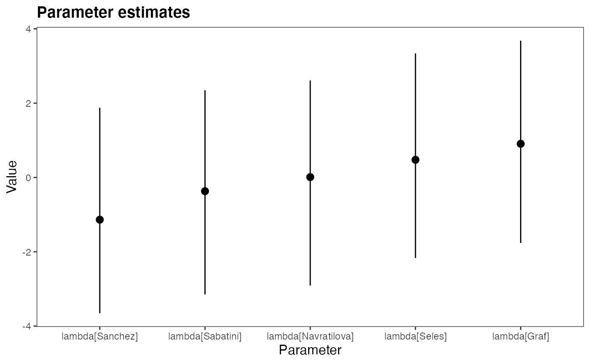

R/bpc_s3.R
plot.bpc.RdS3 plot function for the parameter plot of a bpc model This is just a wrapper for the get_parameters_plot function and can be used interchangebly
# S3 method for bpc plot( x, y = NULL, HPDI = T, params = c("lambda"), title = "Strength estimates", subtitle = NULL, xaxis = "Player", yaxis = "Value", rotate_x_labels = FALSE, APA = TRUE, keep_par_name = FALSE, ... )
| x | a bpc object |
|---|---|
| y | Not used. Default to NULL |
| HPDI | use HPD (TRUE) or credible intervals (FALSE) for the plots |
| params | a vector of string for of the parameters to be plotted |
| title | the title of the plot |
| subtitle | optional subtitle for the plot |
| xaxis | title of the x axis |
| yaxis | title of the y axis |
| rotate_x_labels | should the labels be shown horizontally (default, FALSE) or vertically (TRUE) |
| APA | should the graphic be formatted in APA style (default TRUE) |
| keep_par_name | keep the parameter name e.g. lambda Graff instead of Graff. Default to T. Only valid for lambda, so we can have better ranks |
| ... | additional parameters for the generic S3 plot function. Not used. |
a ggplot2 caterpillar plot
# \donttest{ m<-bpc(data = tennis_agresti, player0 = 'player0', player1 = 'player1', result_column = 'y', model_type = 'bt', solve_ties = 'none') #> Running MCMC with 4 parallel chains... #> #> Chain 1 finished in 3.1 seconds. #> Chain 2 finished in 3.3 seconds. #> Chain 3 finished in 3.1 seconds. #> Chain 4 finished in 3.1 seconds. #> #> All 4 chains finished successfully. #> Mean chain execution time: 3.1 seconds. #> Total execution time: 3.3 seconds. p<-get_parameters_plot(m) p  # }